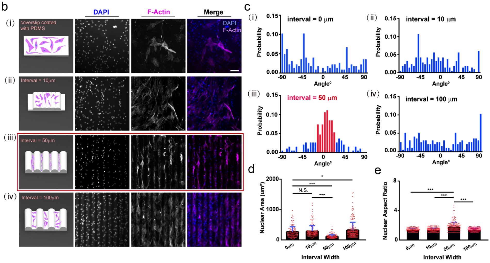
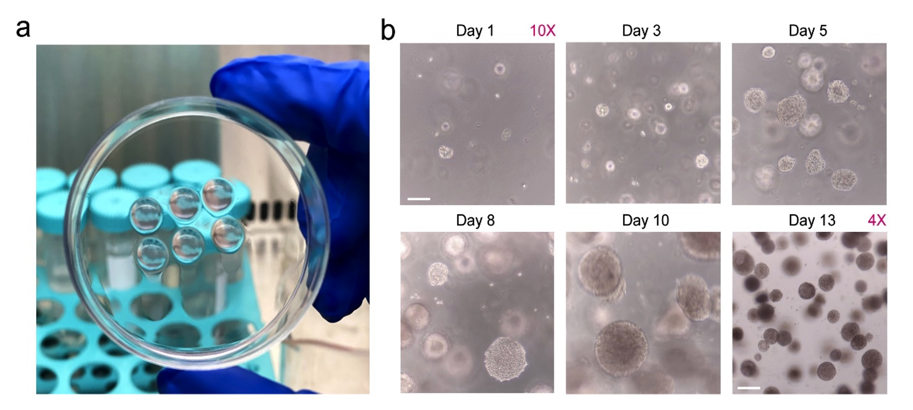

Welcome to YL's Personal Page!
empty space
Profile
- A junior software developer, developing numerical algorithms and professional software using:
- A professional computational scientist, holding a Ph. D. degree in Physical Chemistry and working on the interface of theoretical chemistry, computational physics, and materials science to support characterization, discovery and design of functional materials via multiscale modelling assisted with machine learning approaches.
- A self-motivated and passionate team player, being active and flexible in collaborative projects and have a high efficiency for the management of individial tasks.
empty space
Research Projects

- 2021.01-2021.12 HZB. Supervisor: Prof.
YL.

- 2016.09-2018.09 Stanford U.